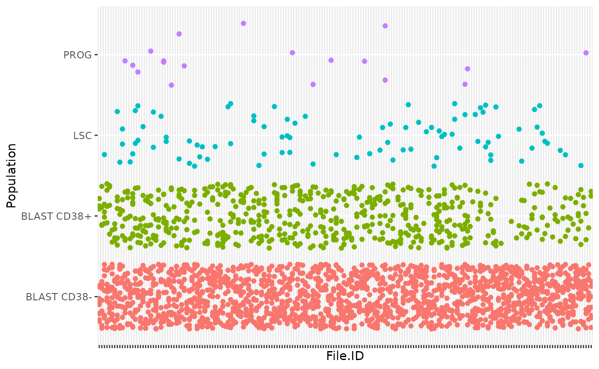
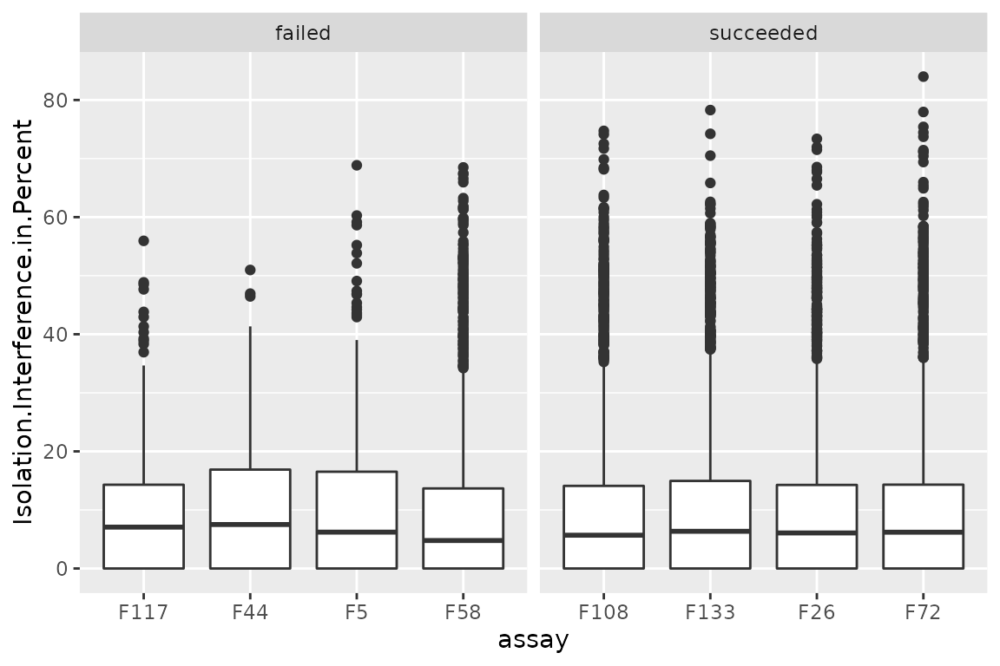
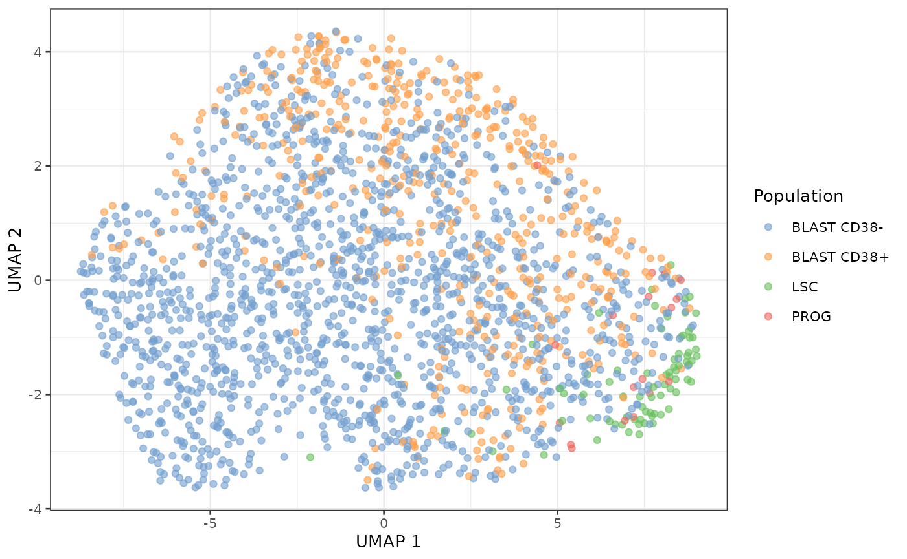
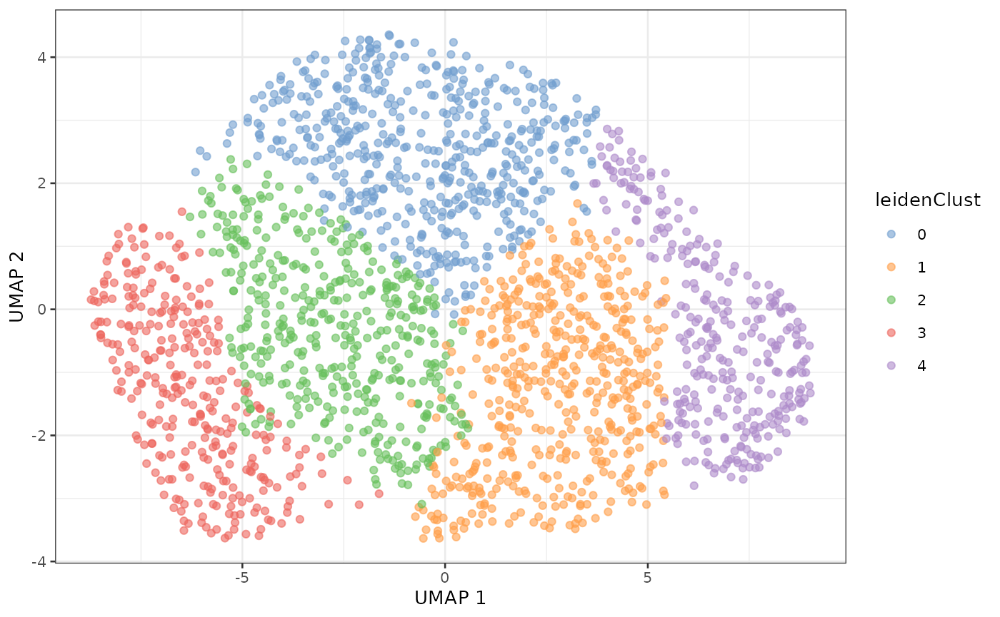
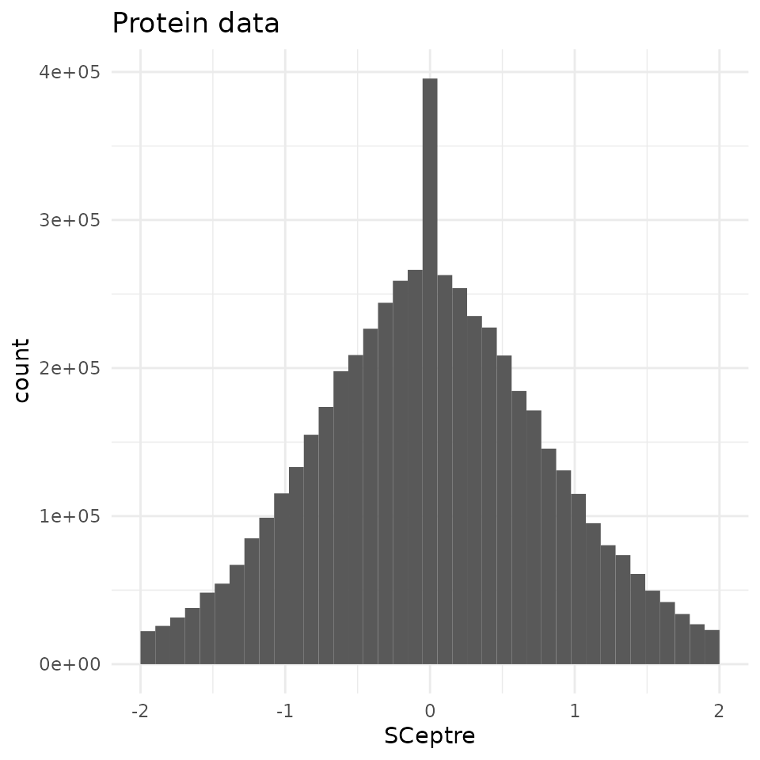

Replication of the AML model analysis (Schoof et al. 2021)
Christophe Vanderaa, Computational Biology, UCLouvain
Laurent Gatto, Computational Biology, UCLouvain
schoof2021.RmdIntroduction
The acute myeloid leukemia (AML) dataset acquired by Schoof et al. (2021) is an excellent dataset to validate the application of mass spectrometry (MS)-based single-cell proteomics (SCP). This model is well characterized with expected cell types that exhibit known biological heterogeneity for some markers (namely CD34 and CD38). This dataset is also an ideal playground for method development and benchmarking.
The research question here is whether SCP is able to retrieve the different population that occur in the AML model. In this culture, we expect to find a small population of leukemic stem cells (LSC) that are CD34+ and CD38-. This population has the ability of self renewal or to differentiate into progenitor cells (PROG) that loose the self renewal ability and start to express CD38+. The PROG progressively differentiate into blast cells (BLAST) that loose the expression of CD38. The CD34/CD38 expression profiles in this model is already well characterized thanks to flow cytometry. A great advantage of the data set provided in Schoof et al. (2021) is that the flow cytometry data is also available. This allows for a characterization of the cell types before starting the data analysis on the SCP data.
The authors performed the analysis using Python and made the effort
to provide the code needed to replicates the results from the article.
Furthermore, they developed a library called SCeptre that
extends the scanpy library, a python library to process
scRNA-Seq data.
In this vignette, we will replicate one of the analysis of the so
called bulk dataset, but here using the R programming
language. The bulk dataset contains single cells isolated
from a bulk cell culture without further selection or cell type
purification. This is a very interesting dataset since it emulates
real-life research applications of SCP.
scp workflow and data structure
The data processing workflow we carry out in this vignette is
converted or takes the R equivalent of the
Python scripts and libraries provided in the SCeptre GitHub repository.
This repository comes with multiple notebooks, but we here replicate the
bulk.ipynb notebook.
We have recently developed a data framework to perform SCP data
analysis in R (Vanderaa and Gatto (2021))
and built the scp package from this framework. The data
framework combines two existing Bioconductor classes. The
SingleCellExperiment class provides an interface to many
cutting edge methods for single-cell analysis and the
QFeatures class facilitates manipulation and processing of
MS-based quantitative data. The scp
vignette provides detailed information about the data structure. The
scp package extends the functionality of
QFeatures for single-cell application.
Below is a general overview of the workflow of the bulk
data analysis.
Overview of the SCeptre workflow.
We coloured each step depending on the underlying package that
performs that step. The blue steps rely on QFeatures, the
purple steps rely on the SingleCellExperiment
infrastructure, the green steps rely on Python code from SCeptre (called
from R) and the orange step relies on scp functionality. As
you can see, only few steps are specific to SCP (orange and green).
The required packages for running this vignette are listed below.
## Core packages of this workflow
library("SingleCellExperiment")
library("QFeatures")
library("scpdata")
library("scp")
## Packages for single-cell applications
library("scuttle")
library("scater")
library("scran")
library("destiny")
## Packages for interfacing with Python
library("reticulate")
library("zellkonverter")
## Utility packages for data manipulation and visualization
library("tidyverse")
library("patchwork")
library("ComplexHeatmap")
library("RColorBrewer")
library("viridis")
library("circlize")
scpdata and the AML differentiation dataset
We also implemented a data package called scpdata. It
distributes published MS-SCP datasets, such as the dataset that will be
analysed in this vignette. The data were downloaded from the data source
provided in the publication and formatted to a QFeatures
object so that it is compatible with our software. The underlying data
storage is based on the ExperimentHub package that provides
a cloud-based storage infrastructure.
The dataset we uploaded to scpdata is the so called
“bulk” dataset that contains 3072 single-cells. The authors refer to it
as the bulk dataset because the cell were not sorted by flow cytometry
but rather processed using an unbiased cell isolation. The dataset was
retrieved from the PRIDE repository (accession ID: PXD020586). It
contains a zip file with all the quantitative data and the sample
annotations. The dataset contains two types of quantitative data:
quantified peptide to spectrum match (PSM) data and protein data. They
were generated after running ProteomeDiscoverer on the raw MS files. The
quantification data are given as signal to noise ratios (S/N). See
?schoof2021 for more info about data acquisition and data
formatting.
The formatted data can be retrieved from the scpdata
package using the schoof2021() function.
scp <- schoof2021()The dataset contains PSM and protein data generated by Proteome
Discoverer. It also contains the protein data after processing by the
authors using the SCeptre workflow. We extract the processed protein
data in a separate variable that we will use later to benchmark the
replication of the data processing using scp.
sce_sceptre <- getWithColData(scp, "logNormProteins")
scp <- scp[, , 1:193]The data now contain 194 different SingleCellExperiment
objects that we refer to as assays. Each assay contains
expression data along with feature annotations. Each row in an assay
represents a feature that can either be a PSM or a
protein depending on the assay. Each column in an assay represents a
sample. Below, we show the overview of the
scp dataset.
scp
## An instance of class QFeatures containing 193 assays:
## [1] F1: SingleCellExperiment with 4455 rows and 16 columns
## [2] F10: SingleCellExperiment with 4604 rows and 16 columns
## [3] F100: SingleCellExperiment with 5056 rows and 16 columns
## ...
## [191] F98: SingleCellExperiment with 4025 rows and 16 columns
## [192] F99: SingleCellExperiment with 3898 rows and 16 columns
## [193] proteins: SingleCellExperiment with 2898 rows and 3072 columnsThe 192 first assays contain the PSM quantifications for each run.
The samples were acquired using a TMT-16 labelling protocol meaning that
every run contains 16 samples and therefore every assay contains 16
columns. The proteins assay contains the protein
quantifications.
The sample annotation can be found in the colData of the
dataset. The most informative annotation fields are:
-
File.ID: the data were acquired in different batches, each batch being associated to a unique file ID. -
Channel: the TMT used to label the sample -
Population: the cell type defined by the flow cytometry data -
SampleType: samples are either boosters (200-cell equivalents), empty wells, normalization channels (10-cell equivalents), or single -
FSC.A,FSC.H, …,APC.Cy7.A,PE.A: the flow cytometry data acquired during the single-cell isolation.
head(colData(scp))
## DataFrame with 6 rows and 32 columns
## File.ID Channel Input.Files.Workflow.ID Input.Files.Workflow.Level
## <factor> <factor> <integer> <integer>
## F1126 F1 126 -3327 1
## F1127N F1 127N -3327 1
## F1127C F1 127C -3327 1
## F1128N F1 128N -3327 1
## F1128C F1 128C -3327 1
## F1129N F1 129N -3327 1
## Input.Files. File.Name Creation.Date RT.Range.in.min Instrument.Name
## <integer> <character> <character> <character> <character>
## F1126 3573 20200829_M... 08/28/2020... 0.07 - 160... Orbitrap E...
## F1127N 3573 20200829_M... 08/28/2020... 0.07 - 160... Orbitrap E...
## F1127C 3573 20200829_M... 08/28/2020... 0.07 - 160... Orbitrap E...
## F1128N 3573 20200829_M... 08/28/2020... 0.07 - 160... Orbitrap E...
## F1128C 3573 20200829_M... 08/28/2020... 0.07 - 160... Orbitrap E...
## F1129N 3573 20200829_M... 08/28/2020... 0.07 - 160... Orbitrap E...
## Software.Revision Plate Sample Well Facs.Data
## <character> <character> <integer> <character> <character>
## F1126 2.0-2.0.12... bulk_b_1 4 NA NA
## F1127N 2.0-2.0.12... bulk_b_1 4 NA NA
## F1127C 2.0-2.0.12... bulk_b_1 4 NA NA
## F1128N 2.0-2.0.12... bulk_b_1 4 D4 facs_data_...
## F1128C 2.0-2.0.12... bulk_b_1 4 D7 facs_data_...
## F1129N 2.0-2.0.12... bulk_b_1 4 D5 facs_data_...
## Row Col Label.Layout Sort.Layout Sample.Layout
## <character> <factor> <character> <character> <character>
## F1126 NA NA NA NA NA
## F1127N NA NA NA NA NA
## F1127C NA NA NA NA NA
## F1128N D 4 label_layo... sort_layou... sample_lay...
## F1128C D 7 label_layo... sort_layou... sample_lay...
## F1129N D 5 label_layo... sort_layou... sample_lay...
## SortedPopulation FSC.A FSC.H FSC.W SSC.A SSC.H
## <character> <integer> <integer> <integer> <integer> <integer>
## F1126 NA NA NA NA NA NA
## F1127N NA NA NA NA NA NA
## F1127C NA NA NA NA NA NA
## F1128N BULK 247 144 439 159 100
## F1128C BULK 249 138 463 199 125
## F1129N BULK 242 139 445 199 124
## SSC.W CD34_APC.Cy7.A CD38_PE.A Time Population SampleType
## <integer> <integer> <integer> <numeric> <character> <character>
## F1126 NA NA NA NA NA booster_bu...
## F1127N NA NA NA NA NA norm
## F1127C NA NA NA NA NA empty
## F1128N 407 233 415 2.47494 BLAST CD38... sc
## F1128C 406 186 439 2.34823 BLAST CD38... sc
## F1129N 410 289 398 2.42698 BLAST CD38... sc
## nbCells
## <numeric>
## F1126 0
## F1127N 10
## F1127C 0
## F1128N 1
## F1128C 1
## F1129N 1Throughout the vignette, we will use ggplot2 from the
tidyverse project (Wickham et al.
(2019)) to visualize the data. As an example, we plot how the
different cell types are distributed across batches.
colData(scp) %>%
data.frame %>%
filter(!is.na(Population)) %>%
ggplot() +
aes(y = Population,
x = File.ID,
colour = Population) +
geom_jitter(width = 0) +
theme(axis.text.x = element_blank(),
legend.position = "none")
As denoted in the article, this data set shows unbalance between the different cell types. This reflects biological reality as some cell types, such as blast cells, are more prevalent than others, such as progenitor cells. An important point to highlight is that all MS batches do not contain PROG or LSC, which complicates the data integration across batches.
Useful links
- Link to the paper
- Link to the preprint
- Link to the
sceptresource code - Link to the SCeptre notebooks,
our report replicates the
bulk.ipynbnotebook
MS run QC
The SCeptre workflow starts with a MS run quality control (QC). In this section, we will check for each run the distribution of the number of PSMs, the average S/N distribution, the channel intensity distribution and the isolation interference distribution.
PSMs per run
The number of features and samples per assay in a
QFeatures object is retrieved using dims.
After removing the last assay (proteins), we plot the
histogram with the number of features for the remaining assays
(i.e. PSMs).
npsms <- dims(scp)[1, -193]
data.frame(npsms = npsms) %>%
ggplot() +
aes(x = npsms) +
geom_histogram()The plot indicates that a few runs failed with low number of PSMs.
names(npsms)[npsms < 3000]
## [1] "F117" "F44" "F5" "F58"4 assays have less than 3000 PSMs and were flagged by the authors as failedd MS runs.
Intensity distributions
We expect similar average reporter signal to noise (S/N) distributions across MS runs. The averages are already computed for each PSM by ProteomeDiscover and correspond to the reporter intensities averaged over the 16 TMT channels divided by the noise estimated from the corresponding MS spectrum. The higher the S/N, the higher the signal quality.
The average S/N is available from the rowData of the PSM
assays. We here collect and combine the rowData from
different assays using the rbindRowData function that will
return a single DataFrame table with all the feature
annotation columns common to all assays. Note that we don’t plot all
assays to avoid a crowded plot. We selected 4 representative and
successful MS runs and the 4 MS runs that have failed (we store this
information in the table).
## A few selected runs
succeeded <- c("F26", "F72", "F108", "F133")
failed <- c("F5", "F44", "F58", "F117")
## Collect the PSM annotations (including the average S/N)
rd <- rbindRowData(scp, i = c(succeeded, failed))
## Add whether a run is flagged as failed or succeeded
rd$failed <- ifelse(rd$assay %in% failed, "failed", "succeeded")We plot the average S/N (stored under
Average.Reporter.SN) as separate boxplots for each MS runs.
The figure is split in 2 panels depending on whether the MS runs
succeeded of failed.
ggplot(data.frame(rd)) +
aes(y = Average.Reporter.SN,
x = assay) +
geom_boxplot() +
facet_grid(~ failed, scales = "free_x")There are no clear differences between succeeded and failed runs.
Isolation interference
Similarly to the average S/N, we can also explore the isolation
interference that gives the percentage of signal that is attributed to
co-isolated peptides. We plot the percent isolation interference (stored
under Isolation.Interference.in.Percent) using the same
layout as above.
ggplot(data.frame(rd)) +
aes(y = Isolation.Interference.in.Percent,
x = assay) +
geom_boxplot() +
facet_grid(~ failed, scales = "free_x")
There are no differences between succeeded and failed runs. However, the isolation interference can be used to filter low-quality PSMs (not performed in this workflow).
Median S/N per channel
The authors next explored the median S/N per channel for all MS runs.
This time, the median S/N has to be computed. First, we focus on the 4
succeeded and the 4 failed assays that were selected above. Note that a
QFeatures object can be seen as a three-order array: \(features \times samples \times assay\).
Hence, QFeatures supports three-order subsetting
x[rows, columns, assays].
(sub <- scp[, , c(succeeded, failed)])
## An instance of class QFeatures containing 8 assays:
## [1] F26: SingleCellExperiment with 4636 rows and 16 columns
## [2] F72: SingleCellExperiment with 4492 rows and 16 columns
## [3] F108: SingleCellExperiment with 4695 rows and 16 columns
## ...
## [6] F44: SingleCellExperiment with 167 rows and 16 columns
## [7] F58: SingleCellExperiment with 2727 rows and 16 columns
## [8] F117: SingleCellExperiment with 202 rows and 16 columnsThen, we retrieve the S/N quantifications along with the sample
annotations (Channel and Population) using the
longFormat function. This function will create a long table
from the QFeatures object where each row corresponds to a
single quantification.
lf <- longFormat(sub, colvars = c("Channel", "Population"))
lf$failed <- ifelse(lf$assay %in% failed, "failed", "succeeded")
lf
## DataFrame with 348432 rows and 8 columns
## assay primary rowname colname value Channel
## <character> <character> <character> <character> <numeric> <factor>
## 1 F26 F26126 PSM20316 F26126 1288.1 126
## 2 F26 F26126 PSM20324 F26126 358.9 126
## 3 F26 F26126 PSM20326 F26126 458.6 126
## 4 F26 F26126 PSM20327 F26126 1475.4 126
## 5 F26 F26126 PSM20328 F26126 878.4 126
## ... ... ... ... ... ... ...
## 348428 F117 F117134N PSM811358 F117134N NA 134N
## 348429 F117 F117134N PSM815013 F117134N 2.4 134N
## 348430 F117 F117134N PSM816804 F117134N NA 134N
## 348431 F117 F117134N PSM819328 F117134N NA 134N
## 348432 F117 F117134N PSM820788 F117134N 5.4 134N
## Population failed
## <character> <character>
## 1 NA succeeded
## 2 NA succeeded
## 3 NA succeeded
## 4 NA succeeded
## 5 NA succeeded
## ... ... ...
## 348428 BLAST CD38... failed
## 348429 BLAST CD38... failed
## 348430 BLAST CD38... failed
## 348431 BLAST CD38... failed
## 348432 BLAST CD38... failed
# channelOrder <- c("126", "127N", "127C", "128N", "128C", "129N", "129C",
# "130N", "130C", "131N", "131C", "132N", "132C", "133N",
# "133C", "134N")
# lf$Channel <- factor(lf$Channel, levels = channelOrder)We then need to compute the median S/N grouped by assay and channel.
This performed using dplyr functionality.
lf <- group_by(data.frame(lf),
assay, Channel, failed, Population)
lfsumm <- summarize(lf, medianSN = median(value, na.rm = TRUE))We can now plot the median S/N for each channel in each assay. We also add a colouring scheme depending on the type of cell that was acquired per channel. Note the y-axis is displayed on a log10 scale.
ggplot(lfsumm) +
aes(x = Channel,
y = medianSN,
fill = Population) +
geom_bar(stat = "identity") +
scale_y_log10() +
facet_wrap(~ failed + assay) +
theme(axis.text.x = element_text(angle = 90, hjust = 1),
legend.position = "bottom")Again, there are no difference in the median intensity distribution
over the different channels between failed and succeeded runs and so
this is not a good proxy for MS run quality. However, it is a good way
to identify technical biases. For instance, and as expected, the
126 channel consistently shows higher S/N because this
channel was allocated the booster sample containing more cells. We can
also see that the cell type does not seem to influence the median
S/N.
Filter data
In this section, we proceed the processing by removing the contaminant proteins, remove the failed runs and removes the channels that are not single-cell samples.
Remove contaminants
Contaminant proteins were flagged when create the
QFeatures object in the scpdata package. This
was performed by matching the protein accession from the dataset from a
list of known contaminants (provided by the authors). Whether a protein
is a contaminant or not is contained in the feature annotation as the
isContaminant field. We can directly filter this variable
using the filterFeatures function that will retrieve the
required data from the rowData of each assay.
We keep only features that are not matched to a contaminant protein.
scp <- filterFeatures(scp, ~ !isContaminant)Remove failed runs
Next, we remove the failed runs that we flagged using the second index subsetting to remove the failed samples from the PSM as well as the protein data.
scp <- subsetByColData(scp, !scp$File.ID %in% failed)
## Takes 90 sec, but could probably be faster -> open issueKeep only single cells
Finally, we keep only single-cell samples. The MS acquisitions contain different sample types. There is the booster channel that was mentioned above containing the equivalent of 200 cells. The 127N channel contains a reference sample with 10-cell equivalents and the 127C channel is left empty to due to cross-contamination of the 126 booster channel. Finally, a few negative controls (samples prepared as single-cell samples but lack a cell) were randomly included in the different MS runs.
Before performing the filter, we show that negative controls can be
discriminated from single-cells based on the number of detected proteins
and the summed quantifications in each sample. This is a reassuring
indicator of data quality. To perform this, we run sample quality
control using the scuttle package that offers utility
functions for scRNA-Seq analysis. Those function can be directly applied
to our assays since they are stored as SingleCellExperiment
objects. We therefore extract the protein assay along with the sample
annotation using the getWithColData. Then, we replace
missing values by zero as expected by the scuttle
package.
sce <- getWithColData(scp, "proteins")
sce <- impute(sce, method = "zero")We then apply the perCellQCMetrics function that
computes the number of detected features and the summed abundance per
sample.
qc <- perCellQCMetrics(sce, assay.type = 1)We then combine the computed QC with the sample annotation and plot the sample QC data.
qc <- data.frame(qc, colData(sce)[rownames(qc), ])
ggplot(qc) +
aes(x = log2(sum),
y = detected,
col = SampleType) +
geom_point(size = 0.9, alpha = 0.5)
First, we can clearly see that booster and reference channels show
higher total signal. This is expected since those channels contains more
material than the single-cell samples. However, those channels cannot be
discriminated based on the number of quantified proteins. Next, the
emtpy empty channels (no TMT label added) are clearly
separated from the single-cell channels both based on the number of
quantified proteins and the summed signal. Finally, the negative control
samples overlap with the lower tail of the single-cell samples both for
the number of proteins and the summed signal. The overlapping
single-cells should be removed, but we will see in a later section that
those cells are removed during cell QC.
We now remove all samples but the single-cell samples.
scp <- subsetByColData(scp, scp$SampleType == "sc")
scp@assayLinks <- scp@assayLinks[names(scp)]Batch correction
The dataset needs to be processed before running downstream analyses.
The first step the authors take is normalizing the data. To perform
this, they implemented a new normalization method and included it in
their sceptre Python module. Their normalization method
aims to remove channel and MS run biases. In our opinion, this step
should be referred to as batch correction rather than normalization.
We extract the assay to batch correct using
getWithColData. The batch correction method in
sceptre expects that the sample annotation
File ID is present. We therefore adapt the corresponding
column name as requested.
sce <- getWithColData(scp, "proteins")
colnames(colData(sce))[1] <- "File ID"
sce
## class: SingleCellExperiment
## dim: 2870 2396
## metadata(0):
## assays(1): ''
## rownames(2870): MYH9 MPO ... METTL3 MRPL48
## rowData names(34): ProteinsUnique.Sequence.ID Checked ... rowname
## isContaminant
## colnames(2396): F1128N F1128C ... F99133C F99134N
## colData names(32): File ID Channel ... SampleType nbCells
## reducedDimNames(0):
## mainExpName: NULL
## altExpNames(0):We are now faced with an issue. The algorithm we want to apply is
only available in Python whereas this script is written in R. Luckily,
we can make use of the reticulate R package (Ushey, Allaire, and Tang (2021)) that provides
an interface between an R and Python code. We setup the python
environment that contains the required modules to run
scpetre (for more info, see the Requirements
section at the end of the vignette).
spt <- import("sceptre")Now that we can interface R with Python, we need to convert the
SingleCellExperiment object (R) into an
AnnData object (Python). This can easily be done using the
SCE2AnnData from the zellkonverter
package.
adata <- SCE2AnnData(sce, X_name = 1)We can now apply the normalize function from
sceptre.
spt$normalize(adata)The AnnData object stored as adata now
contains the normalized data. We can reinsert the object as a new assay.
First, we convert the data back to a SingleCellExperiment
object using AnnData2SCE. Then, we add the normalized assay
into the QFeatures object using addAssay.
Finally, addAssayLink will retrieve the relationship
between the features of the old and new assay based on the protein
accession.
sce <- AnnData2SCE(adata)
scp <- addAssay(scp, sce, name = "proteins_norm")
scp <- addAssayLink(scp, from = "proteins", to = "proteins_norm",
varFrom = "Accession", varTo = "Accession")
scp
## An instance of class QFeatures containing 194 assays:
## [1] F1: SingleCellExperiment with 4425 rows and 13 columns
## [2] F10: SingleCellExperiment with 4562 rows and 13 columns
## [3] F100: SingleCellExperiment with 4997 rows and 13 columns
## ...
## [192] F99: SingleCellExperiment with 3817 rows and 13 columns
## [193] proteins: SingleCellExperiment with 2870 rows and 2396 columns
## [194] proteins_norm: SingleCellExperiment with 2778 rows and 2396 columnsCell QC
In this section, we proceed with the single-cell QC. Failed and low- quality cells must be removed to avoid biasing the downstream analyses.
Compute QC
We already showed how to perform cell QC using
perCellQCMetrics in a previous section and showed that
booster, reference, empty and single-cell samples can easily be
discriminated. This time, we will apply the same procedure on the
normalized data and show how to remove low-quality cells.
qc <- perCellQCMetrics(scp[["proteins_norm"]], assay.type = 1)Once the QC metrics are computed, we need to define thresholds. In
the SCeptre workflow, this is performed using the median absolute
deviation (MAD). We can use the isOutlier function that
computes the MADs and return whether a cell is an outlier (low-quality
cell) or not. This information is immediately stored in the QC table and
we extract the thresholds for later plotting.
qc$outlier <- isOutlier(qc$sum, nmads = 2, log = TRUE, type = "both")
mads <- attr(qc$outlier,"thresholds")The computed QCs are added to the colData of the
QFeatures object.
Note about QC in SCeptre
The QC on single-cell is generally performed before batch correction
(here called normalization in scpetre) since the cell
quality may vary depending on the batch and hence bias the correction
process. A better approach is to compute the cell QC for each batch
separately. This is easily performed with isOutlier by
providing the batch argument.
Plot QC
We plot the cell QC metrics and colour by channel.
ggplot(data.frame(colData(scp))) +
aes(x = log2(sum),
y = detected,
col = Channel) +
geom_point(size = 0.9, alpha = 0.5) +
geom_vline(xintercept = log2(mads)) +
geom_hline(yintercept = 700) +
scale_alpha_manual(values = c(0.5, 0.2))As we already observed previously, the single-cell sample form a compact cloud. The MAD and number of proteins thresholds remove a few outlying cells, but a large majority is retained. You may notice that the first MAD threshold (\(log_2(sum) \approx 14\)) filters out all the negative controls that were discussed in a previous section. The channel does not seem to affect the QC, but remember that difference between channels were already corrected during the normalization step.
Filter cells
Now that we have defined filtering thresholds, we can apply the
filter. Recall that outlier defines whether a cell passes
the MAD threshold or not.
scp <- subsetByColData(scp, !scp$outlier & scp$detected > 700)Further QC
In their workflow, the authors displayed the summed intensities per
plate to identify biases linked to the plate, the rows of the plate and
the column of the plate. The data required to replicate this plot is
contained in the colData.
df <- data.frame(colData(scp))
ggplot(df) +
aes(x = Col,
y = Row,
fill = log2(sum)) +
geom_tile(col = "black") +
facet_wrap(~ Plate) +
theme(panel.grid.major = element_blank()) +
scale_x_discrete(drop = FALSE)The position on the plate does not seem to influence the quality of the cells.
Another QC the authors performed is to check the correlation between
FACS parameters (that define the cell type) and the QC metrics. The
information is again available from the colData.
df <- data.frame(colData(scp))
## First plot is coloured by number of detected proteins
p1 <- ggplot(df) +
aes(x = CD34_APC.Cy7.A,
y = CD38_PE.A,
colour = detected) +
geom_point() +
scale_colour_continuous(type = "viridis")
## Second plot is coloured by log2 summed intensities
p2 <- p1 + aes(colour = log2(sum))
## Show plots
p1 + p2 + plot_layout(ncol = 1)FACS signal is correlated neither with the number of detect proteins nor with the summed protein intensities.
Feature QC
Next to cell QC, the authors also filter the data based on protein QC metrics. More specifically, they keep a proteins if it was detect in at least 3 cells.
We can quickly compute this using the
perFeatureQCMetrics from the scuttle package.
We convert the proportion of sample a protein is detected in to the
number of sample.
sce <- scp[["proteins_norm"]]
qc <- perFeatureQCMetrics(sce, assay.type = 1)
qc$ncells <- qc$detected / 100 * ncol(sce)We store the resulting QC in the rowData of the
normalized protein assay.
Next, we keep the proteins that are detected in at least 3 cells.
Note that this time we don’t use the filterFeatures
function but the 3 index subsetting. Since ncells is only
available for the normalized protein assay, using
filterFeatures would remove all the other assays. Instead,
subsetting on the feature names will take advantage of the fact that the
normalized protein assay is linked to the other assays thanks to the
QFeatures data structure.
sel <- qc[qc$ncells >= 3, ]
# scp <- scp[rownames(sel), , ]
scp <- filterFeatures(scp, ~ ncells >= 3)Normalization II
The SCeptre workflow performs a second normalization step to prepare
the data before embedding an dimension reduction. They apply a median
shift of the total intensity across cells, as implemented in the
scanpy python library. We perform the same normalization
using R code. First, we compute median shifted total intensities that
are used as scaling factor. Then, we run the sweep function
on the QFeatures object. It acts as the base
sweep for matrices: it takes the quantitative data matrix
and applies a scaling vector and function to the matrix along the
desired dimension. The results are stored in a new assay that we here
call proteins_medshift.
sf <- colSums(assay(scp, "proteins_norm"))
sf <- sf / median(sf)
(scp <- sweep(scp, MARGIN = 2, STATS = sf, FUN = "/",
i = "proteins_norm", name = "proteins_medshift"))
## An instance of class QFeatures containing 195 assays:
## [1] F1: SingleCellExperiment with 0 rows and 13 columns
## [2] F10: SingleCellExperiment with 0 rows and 8 columns
## [3] F100: SingleCellExperiment with 0 rows and 8 columns
## ...
## [193] proteins: SingleCellExperiment with 0 rows and 2094 columns
## [194] proteins_norm: SingleCellExperiment with 2727 rows and 2094 columns
## [195] proteins_medshift: SingleCellExperiment with 2727 rows and 2094 columnsLog-transformation
The next step in the SCeptre workflow is to \(log_2\) transform the data. This is
performed in our workflow using the logTransform function
that adds a new assay containing the transformed data to the
QFeatures object. Note that the authors used a pseudo-count
of 1.
scp <- logTransform(scp, base = 2, pc = 1,
i = "proteins_medshift", name = "proteins_log")Imputation of missing data
The SCeptre workflow then proceeds with imputation. The imputation is
performed by the impute function implemented in
sceptre library. Under the hood, the function relies on the
KNNImputer from the scikit-learn Python
library.
Imputation can be performed on a QFeatures object using
the impute function that relies on the
MsCoreUtils package. However, the specific implementation
differs from KNNImputer. Therefore, for sake of
replication, we rather use the latter using the R-to-Python interface by
reticulate. Again, we need to convert the target assay to
an AnnData object.
sce <- getWithColData(scp, "proteins_log")
adata <- SCE2AnnData(sce, X_name = 1)We then perform the imputation.
spt$impute(adata)Finally, we convert the data back to a
SingleCellExperiment object and add it to the
QFeatures object.
sce <- AnnData2SCE(adata)
scp <- addAssay(scp, sce, name = "proteins_imput")
scp <- addAssayLink(scp, from = "proteins_log", to = "proteins_imput",
varFrom = "Accession", varTo = "Accession")
scp
## An instance of class QFeatures containing 197 assays:
## [1] F1: SingleCellExperiment with 0 rows and 13 columns
## [2] F10: SingleCellExperiment with 0 rows and 8 columns
## [3] F100: SingleCellExperiment with 0 rows and 8 columns
## ...
## [195] proteins_medshift: SingleCellExperiment with 2727 rows and 2094 columns
## [196] proteins_log: SingleCellExperiment with 2727 rows and 2094 columns
## [197] proteins_imput: SingleCellExperiment with 2727 rows and 2094 columnsNormalization III
The last step of the SCeptre workflow before running the downstream
analysis is to perform a last normalization, known as centering and
scaling to unit variance. While this is performed using
scanpy in the SCeptre workflow, we here apply the
sweep function as shown previously.
means <- rowMeans(assay(scp, "proteins_imput"))
scp <- sweep(scp, MARGIN = 1, STATS = means, FUN = "-",
i = "proteins_imput", name = "proteins_centered")
stds <- rowSds(assay(scp, "proteins_centered"))
scp <- sweep(scp, MARGIN = 1, STATS = stds, FUN = "/",
i = "proteins_centered", name = "proteins_scaled")Downstream analysis
After this extensive processing of the data, the authors perform the downstream analysis to answer the research question of interest, that is, is SCP able to retrieve the hierarchical structure of the AML model. To evaluate this, they first performed various dimension reductions, followed by pseudo-time analysis. Cell clustering is performed as well as gene clustering to define novel gene signature.
So, now that the processing is complete, we can extract the last assay on which we will perform the downstream analysis.
sce <- getWithColData(scp, "proteins_scaled")Dimension reduction
We perform 3 types of dimension reductions: PCA, UMAP and diffusion map.
PCA
PCA can be directly computed from SingleCellExperiment
objects using the runPCA function from the
scater package. The resulting dimension reduction is stored
in the reducedDim slot of the object.
sce <- runPCA(sce,
ncomponents = 50,
ntop = Inf,
scale = FALSE,
exprs_values = 1,
name = "PCA")The package also provides the plotPCA function to
directly plot the PCA from the SingleCellExperiment
object.
plotPCA(sce, colour_by = "Population")We can already see the LSC and PROG populations are close together in the latent space whereas the blast are spread over the latent space.
UMAP
Similarly to PCA, we can use runUMAP and
plotUMAP to generate and plot UMAP space. We modify the
tuning arguments to match the parameters used in the SCeptre
notebook.
set.seed(1234)
sce <- runUMAP(sce,
ncomponents = 2,
ntop = Inf,
scale = FALSE,
n_neighbors = 30,
min_dist = 0.5,
exprs_values = 1,
dimred = "PCA",
name = "UMAP")
plotUMAP(sce, colour_by = "Population")
We can draw the same conclusion for the UMAP results than for the PCA result. LSC and PROG are also close in UMAP space while the BLAST are spread evenly. UMAP is used to visually assess the presence of clusters. In this case, we cannot see clusters but rather an homogeneous cloud. One reason could be that the present SCP data does not provide sufficient resolution (noise is too high) to discriminate between the different cell types. Another explanation is that the proteome between the different cell types is continuously shifting from one cell type to another. It is important to remember that the cell types are defined based on the CD34/CD38 flow-cytometry data using hard thresholds. To investigate whether this transition might be a smooth transition, we plot the score of the first UMAP vector along the FACS data.
df <- data.frame(colData(sce), UMAP = reducedDim(sce, "UMAP"))
ggplot(df)+
aes(x = CD34_APC.Cy7.A,
y = CD38_PE.A,
colour = UMAP.1) +
geom_point(alpha = 0.7) +
geom_hline(yintercept = 470) +
geom_vline(xintercept = 500) +
annotate("label",
label = c("BLAST CD38+", "PROG", "BLAST CD38-", "LSC"),
x = c(300, 700, 300, 700),
y = c(750, 750, 200, 200))This plot indeed indicates a smooth transition between the different cell types and this transition seems to be captured by the first UMAP vector. The higher the combination of the CD34 and or CD38 signal, the higher the UMAP score.
While reassuring, the first scenario (too much noise to resolve cluster) might still hold as the LSC and PROG that are well separated by the FACS data and display clear phenotypical differences (LSC can self-renew, whereas PROG cannot) cannot be distinguished in UMAP space.
Diffusion map
Another dimension reduction technique is diffusion maps that generates a manifold where cells are spatially organized so that it reflects their transition probabilities. This is a more suitable of representation differentiation processes, like those happening in the AML model.
Diffusion maps can be computed using runDiffusionMap in
scuttle. However, we here prefer to use the
destiny package to not only get the diffusion map
components, but also the transition probability matrix that we will use
later during the pseudo-time analysis.
# BiocManager::install("theislab/destiny")
set.seed(1234)
dm <- DiffusionMap(reducedDim(sce, "PCA"))We stored the diffusion components in the reducedDim
slot so that we can plot the results using the
plotDimensionReduction function.
reducedDim(sce, "DiffusionMap") <- eigenvectors(dm)
plotDiffusionMap(sce, colour_by = "Population")
The first diffusion component recapitulates the expected differentiation hierarchy from the AML model. One of the tips of the diffusion map mainly contains LSC cells. PROG cells then also appear as well as BLAST.
Pseudo-time analysis
The objective of the pseudo-time analysis is to order cells along
their differentiation tracks. To do so, we first need to define a root
cell. Since the cells should theoretically derive from LSC cells, we
define the root cell as the LSC cell at the tip of the diffusion map. We
store this which cell is the root in the colData.
df <- data.frame(DC1 = dm$DC1, Population = sce$Population)
df <- df[df$Population == "LSC", ]
root <- rownames(df)[abs(df$DC1) == max(abs(df$DC1))]
sce$isRoot <- FALSE
colData(sce)[root, "isRoot"] <- TRUEWe can now compute the diffusion pseudo-time using the
DPT function. Again, we store the output in the
colData after converting the pseudo-time to percentage.
We map the pseudo-time on the diffusion map and on the UMAP plots.
plotDiffusionMap(sce, colour_by = "dpt") +
plotUMAP(sce, colour_by = "dpt")We also map the pseudo-time on the FACS data to highlight the estimated differentation trajectory.
df <- data.frame(colData(sce))
ggplot(df)+
aes(x = CD34_APC.Cy7.A,
y = CD38_PE.A,
colour = dpt) +
geom_point(alpha = 0.7) +
geom_hline(yintercept = 470) +
geom_vline(xintercept = 500) +
annotate("label",
label = c("BLAST CD38+", "PROG", "BLAST CD38-", "LSC"),
x = c(300, 700, 300, 700),
y = c(750, 750, 200, 200))From this plot, the pseudo-time analysis follows the trajectory from the FACS data as descried in the literature, that is, LSC cells differentiate into PROG cells then into BLAST CD38+ cells and finish as BLAST CD38- cells. Interestingly, this plot also suggests an alternative trajectory going from LSC directly to BLAST CD38-. This was also observed in the Schoof et al. (2021) paper. This represents a good replication of their work, we were able to successfully replicate their work.
Cell clustering
Next to pseudo-time analysis, the authors also performed cell
clustering. They applied the leiden algorithm to identify clusters from
the data. Since this is only implemented in Python, we will again use
the reticulate interface. First, we converted our data to
an AnnData object.
adata <- SCE2AnnData(sce, X_name = 1)Next we load the scanpy module that contains the
required function to perform PCA, that is used to build the nearest
neighbour graph, that is used to identify clusters using the Leiden
algorithm. The resulting clusters are stored in the
colData
scanpy <- import("scanpy")
scanpy$pp$pca(adata, random_state = 1L)
scanpy$pp$neighbors(adata, n_neighbors = 30L, random_state = 5L)
scanpy$tl$leiden(adata, resolution = 0.3)
sce$leidenClust <- adata$obs$leidenWe map the clusters on the UMAP plot.
plotUMAP(sce, colour_by = "leidenClust")
The clusters shown above differ from the clusters shown in the SCeptre notebook. As we will see in a later section the data obtained in this vignette differ slightly from the data obtained in the SCeptre notebook. The discrepancies between the clusters from two slightly different datasets puts into question the reliability of the identified clusters. This observation supports the observation we drew from the UMAP where no grouping structure is found. Furthermore, we know a priori the cell types thanks to the FACS staining and previous work from literature. We can plot the concordance between the identified cluster and the known cell types.
df <- data.frame(colData(sce))
## Count cells per cell type per cluster
df <- group_by(df, Population, leidenClust)
df <- summarize(df, n = n())
## Compute the relative frequency per cluster
df <- group_by(df, leidenClust)
df <- mutate(df, rfreq = n/sum(n))
## Plot bar chart
ggplot(df) +
aes(x = leidenClust,
y = rfreq,
fill = Population) +
geom_histogram(stat = "identity")The clustering does not recapitulate the known biological information. All the clusters contain several cell type, and all cell types are present in several clusters. So, this dataset, and maybe more generally this biological model, should not be described as a set of discrete clusters.
Find marker genes
In the SCeptre workflow, the authors searched for marker genes across
the different clusters. As argued above, we don’t trust the clustering
and will rather showcase how to identify marker gene between the
different cell types from a SingleCellExperiment object.
The functionality to perform this is provided in the scran
package.
We use the findMarkers function that generates a list of
tables, where each table provides the result of the differential
expression analysis for one cell type against the others. We here use
the t-test as the statistical method and decide to report p-values based
one the one cluster vs all framework (see ?findMarkers for
more info). We also specify that we want up regulated genes.
markers <- findMarkers(sce,
assay.type = 1,
groups = sce$Population,
test.type = "t",
direction = "up",
pval.type = "all")
markers
## List of length 4
## names(4): BLAST CD38- BLAST CD38+ LSC PROGWe next combine the list of tables into a single table. We also add
an additional column Population that indicates to which
population a gene is the marker.
markers <- lapply(names(markers),
function(i) cbind(markers[[i]][, c("FDR", "summary.logFC")],
Population = i))
markers <- do.call(rbind, markers)
markers$gene <- rownames(markers)We keep only genes that are differentially expressed, that is for which the false discovery rate (FDR) is lower than 5 % and the log fold change between the given cluster and the others is larger than 1.
markers <- markers[markers$FDR < 0.05 & markers$summary.logFC > 1, ]We plot the marker expression as heatmap using
ComplexHeatmaps. First, we filter the data to include only
marker genes.
x <- sce[markers$gene, ]We set a colouring scheme for the cell types using the
RColorBrewer package.
popCols <- brewer.pal(4, "Set1")
names(popCols) <- unique(x$Population)Next, we create column annotation to highlight the cell types on the columns of the heatmap.
colAnnot <- columnAnnotation(Population = x$Population,
col = list(Population = popCols))Similarly, we create row annotation to highlight the cell types on the rows of the heatmap.
rowAnnot <- rowAnnotation(Population = anno_simple(markers$Population,
col = popCols))Finally, we define the colors of the heatmap using the
viridis and the circlize color scheme. Note
that we provide some trimming of the values for better rendering.
vircols <- viridis(100)
trimmin <- -2
trimmax <- 2
vircols <- colorRamp2(seq(trimmin, trimmax, length.out = 100), vircols)We can now generate the heatmap.
Heatmap(matrix = assay(x),
name = "logProteins",
col = vircols,
left_annotation = rowAnnot,
top_annotation = colAnnot,
cluster_rows = FALSE,
cluster_columns = FALSE,
show_row_names = FALSE,
show_column_names = FALSE,
column_order = order(x$Population),
use_raster = TRUE,
heatmap_legend_param = list(at = c(trimmin, 0, trimmax)))We can see that the more cells differentiate towards BLAST CD38- cells the more they expressed a unique set of genes. We could not find genes that are differentially over-expressed by PROG cells.
Let’s have a look at the top markers for the different cell populations.
Top markers of the BLAST CD38- cells
markerBlastCD38neg <- markers[markers$Population == "BLAST CD38-", ]
head(markerBlastCD38neg[order(markerBlastCD38neg$FDR), ])
## DataFrame with 6 rows and 4 columns
## FDR summary.logFC Population gene
## <numeric> <numeric> <character> <character>
## ARL1 2.00507e-62 1.25826 BLAST CD38... ARL1
## RAB11FIP1 7.00613e-20 1.09573 BLAST CD38... RAB11FIP1
## MRPL20 1.24321e-18 1.06399 BLAST CD38... MRPL20
## CTAGE15; CTAGE15P 2.69553e-17 1.43481 BLAST CD38... CTAGE15; C...
## NDUFA6 3.21499e-16 1.14144 BLAST CD38... NDUFA6
## FHL1 1.17473e-15 1.46280 BLAST CD38... FHL1The most significant marker is ARL1 (ADP-ribosylation factor-like protein 1). It is annotated as involved in the protein localization and transport to the Golgi appartus.
We also plot the evolution of the ARL1 expression with respect to the pseudo-time.
df <- data.frame(exprs = assay(sce)["ARL1", ],
colData(sce))
ggplot(df) +
aes(y = exprs,
x = dpt,
col = Population) +
geom_point() +
ggtitle("ARL1 abundance")We can indeed observe a strong correlation between ARL1 expression and the pseudo time. However, the distribution of the point shows an undesired trend, that is that some observations are grouped along stripes. We already observed this for other SCP data and we showed that these stripes are artefacts of data processing (Vanderaa and Gatto (2021)).
Top marker of the BLAST CD38+ cells
markerBlastCD38pos <- markers[markers$Population == "BLAST CD38+", ]
head(markerBlastCD38pos[order(markerBlastCD38pos$FDR), ])
## DataFrame with 6 rows and 4 columns
## FDR summary.logFC Population gene
## <numeric> <numeric> <character> <character>
## P4HB 8.22180e-09 1.71286 BLAST CD38... P4HB
## CTSG 2.39614e-07 1.34137 BLAST CD38... CTSG
## ZNF586 1.81385e-06 1.25044 BLAST CD38... ZNF586
## GPI 7.04427e-06 1.16374 BLAST CD38... GPI
## MDC1 7.04427e-06 1.22853 BLAST CD38... MDC1
## ELANE 7.70131e-06 1.75155 BLAST CD38... ELANEThe most significant marker is P4HB (Protein disulfide-isomerase).
df <- data.frame(exprs = assay(sce)["P4HB", ],
colData(sce))
ggplot(df) +
aes(y = exprs,
x = dpt,
col = Population) +
geom_point() +
ggtitle("P4HB abundance")
For this marker, the trend between protein abundance and diffusion pseudo-time is bell-shaped. This is expected from the BLAST CD38+ cells since they represent the intermediate step of differentiation.
- Marker of the LSC cells
markerBlastLSC <- markers[markers$Population == "LSC", ]
markerBlastLSC[order(markerBlastLSC$FDR), ]
## DataFrame with 2 rows and 4 columns
## FDR summary.logFC Population gene
## <numeric> <numeric> <character> <character>
## PPIG 0.0301132 1.04888 LSC PPIG
## PRDX1 0.0369507 1.29379 LSC PRDX1Only two markers are found significant for the LSC population. One of the two, PRDX1 associated to cell proliferation and response to oxydative stress. These biological processes are expected to occur in LSC (Trombetti et al. (2021)).
df <- data.frame(exprs = assay(sce)["PRDX1", ],
colData(sce))
ggplot(df) +
aes(y = exprs,
x = dpt,
col = Population) +
geom_point() +
ggtitle("PRDX1 abundance")The relationship between PRDX1 expression and pseudo-time is anti-correlated with a strong expression by LSC at early estimated differentiation time and low expression at later time by BLAST cells.
Benchmarking
Up to this point, we replicated the processing steps by SCeptre using
our scp workflow and showed how to perform downstream
analyses using R/Bioconductor software. We will now assess the quality
of the replication and see how well we can recreate the original data.
We retrieved the final data provided by the Schoof et al.
We will compare the dataset processed through SCeptre and the dataset
processed through scp based on 3 metrics:
- The overlap of the selected cells
- The overlap of the selected proteins
- The difference of the processed quantitative data
Compare the selected cells
One of the above section filtered the single cells based on the summed abundance and the number of detected proteins. We will check that we could indeed replicate the cell filter performed by SCeptre.

The scp filtering step keeps 70 additional cells
compared to SCeptre, and removed 1 cell that SCeptre kept, but the two
workflows agreed on 2024 cells.
Compare the selected proteins
The SCeptre and the scp protein data have comparable
dimensions, although they are not exactly the same. We plot the overlap
of the selected proteins between the two workflows.
The selected proteins highpy overlap between the two workflows.
scp kept 4 proteins that were removed by SCeptre. 2723
proteins were selected by both workflows. Similarly to the filtered
cells, the differences are negligible and demonstrate an almost perfect
replication of the feature filtering steps.
Compare the processed quantifications
To assess the differences between the data matrices, we intersect the proteins and the cells to have comparable matrices.

95 % of the differences are contained within (-0.42, 0.53) with a sharp peak around 0. We compare this difference distribution to the distribution of the protein abundance in the SCeptre dataset.

Compared to the shape of the quantitative data, the differences
observed between the two workflows are negligeable. Therefore, the
scp workflow accurately replicates the SCeptre
workflow.
Conclusion
In this vignette, we have demonstrated that the scp
package is able to accurately replicate the analysis published in Schoof et al. (2021). It also serves to showcase
how to apply scp to real-life SCP data. Finally, we also
show how to bridge and integrate software from two different programming
languages. While this workflow is fully executed in R, we were able to
include Python thanks to the reticulate interface.
Reproduce this vignette
You can reproduce this vignette using Docker:
docker pull cvanderaa/scp_replication_docker:v1
docker run \
-e PASSWORD=bioc \
-p 8787:8787 \
cvanderaa/scp_replication_docker:v1Open your browser and go to http://localhost:8787. The USER is rstudio
and the password is bioc. You can find the vignette in the
vignettes folder.
See the website home page for more information.
Requirements
Hardware and software
The system details of the machine that built the vignette are:
## Machine: Linux (5.15.0-46-generic)
## R version: R.4.2.1 (svn: 82513)
## RAM: 16.5 GB
## CPU: 16 core(s) - 11th Gen Intel(R) Core(TM) i7-11800H @ 2.30GHzFurther information about the Python environment:
import IPython
print(IPython.sys_info())
## {'commit_hash': '311a3a0fd',
## 'commit_source': 'installation',
## 'default_encoding': 'utf-8',
## 'ipython_path': '/usr/local/lib/python3.8/dist-packages/IPython',
## 'ipython_version': '8.5.0',
## 'os_name': 'posix',
## 'platform': 'Linux-5.15.0-46-generic-x86_64-with-glibc2.29',
## 'sys_executable': '/usr/bin/python3',
## 'sys_platform': 'linux',
## 'sys_version': '3.8.10 (default, Jun 22 2022, 20:18:18) \n[GCC 9.4.0]'}Package dependencies
In order to rerun this vignette and and make use of the same package
(R) and modules (Python), you can activate the renv
associated to this vignette. Clone (download) the
SCP.replication GitHub repository
and run the following commands:
When the renv::restore() completed, you should be able
to run this vignette on your local machine.
Session info
sessionInfo()
## R version 4.2.1 (2022-06-23)
## Platform: x86_64-pc-linux-gnu (64-bit)
## Running under: Ubuntu 20.04.4 LTS
##
## Matrix products: default
## BLAS: /usr/lib/x86_64-linux-gnu/blas/libblas.so.3.9.0
## LAPACK: /usr/lib/x86_64-linux-gnu/lapack/liblapack.so.3.9.0
##
## locale:
## [1] LC_CTYPE=en_US.UTF-8 LC_NUMERIC=C
## [3] LC_TIME=en_US.UTF-8 LC_COLLATE=en_US.UTF-8
## [5] LC_MONETARY=en_US.UTF-8 LC_MESSAGES=en_US.UTF-8
## [7] LC_PAPER=en_US.UTF-8 LC_NAME=C
## [9] LC_ADDRESS=C LC_TELEPHONE=C
## [11] LC_MEASUREMENT=en_US.UTF-8 LC_IDENTIFICATION=C
##
## attached base packages:
## [1] grid stats4 stats graphics grDevices utils datasets
## [8] methods base
##
## other attached packages:
## [1] benchmarkme_1.0.8 circlize_0.4.15
## [3] viridis_0.6.2 viridisLite_0.4.1
## [5] RColorBrewer_1.1-3 ComplexHeatmap_2.13.1
## [7] patchwork_1.1.2 forcats_0.5.2
## [9] stringr_1.4.1 dplyr_1.0.10
## [11] purrr_0.3.4 readr_2.1.2
## [13] tidyr_1.2.1 tibble_3.1.8
## [15] tidyverse_1.3.2 zellkonverter_1.7.4
## [17] reticulate_1.26 destiny_3.11.0
## [19] scran_1.25.1 scater_1.25.6
## [21] ggplot2_3.3.6 scuttle_1.7.4
## [23] scp_1.7.0 scpdata_1.5.0
## [25] ExperimentHub_2.5.0 AnnotationHub_3.5.1
## [27] BiocFileCache_2.5.0 dbplyr_2.2.1
## [29] QFeatures_1.7.1 MultiAssayExperiment_1.23.8
## [31] SingleCellExperiment_1.19.0 SummarizedExperiment_1.27.3
## [33] Biobase_2.57.1 GenomicRanges_1.49.1
## [35] GenomeInfoDb_1.33.7 IRanges_2.31.2
## [37] S4Vectors_0.35.3 BiocGenerics_0.43.4
## [39] MatrixGenerics_1.9.1 matrixStats_0.62.0
##
## loaded via a namespace (and not attached):
## [1] rappdirs_0.3.3 ggthemes_4.2.4
## [3] ragg_1.2.2 bit64_4.0.5
## [5] knitr_1.40 irlba_2.3.5
## [7] DelayedArray_0.23.1 data.table_1.14.2
## [9] KEGGREST_1.37.3 RCurl_1.98-1.8
## [11] AnnotationFilter_1.21.0 doParallel_1.0.17
## [13] generics_0.1.3 ScaledMatrix_1.5.1
## [15] RSQLite_2.2.17 proxy_0.4-27
## [17] bit_4.0.4 tzdb_0.3.0
## [19] xml2_1.3.3 lubridate_1.8.0
## [21] httpuv_1.6.6 assertthat_0.2.1
## [23] gargle_1.2.1 xfun_0.33
## [25] hms_1.1.2 jquerylib_0.1.4
## [27] evaluate_0.16 promises_1.2.0.1
## [29] DEoptimR_1.0-11 fansi_1.0.3
## [31] readxl_1.4.1 igraph_1.3.4
## [33] DBI_1.1.3 googledrive_2.0.0
## [35] benchmarkmeData_1.0.4 ellipsis_0.3.2
## [37] RSpectra_0.16-1 backports_1.4.1
## [39] bookdown_0.29 sparseMatrixStats_1.9.0
## [41] vctrs_0.4.1 Cairo_1.6-0
## [43] here_1.0.1 TTR_0.24.3
## [45] abind_1.4-5 cachem_1.0.6
## [47] RcppEigen_0.3.3.9.2 withr_2.5.0
## [49] robustbase_0.95-0 vcd_1.4-10
## [51] xts_0.12.1 cluster_2.1.4
## [53] BiocBaseUtils_0.99.12 dir.expiry_1.5.1
## [55] lazyeval_0.2.2 laeken_0.5.2
## [57] crayon_1.5.1 basilisk.utils_1.9.3
## [59] labeling_0.4.2 edgeR_3.39.6
## [61] pkgconfig_2.0.3 vipor_0.4.5
## [63] ProtGenerics_1.29.0 nnet_7.3-17
## [65] rlang_1.0.5 lifecycle_1.0.2
## [67] filelock_1.0.2 modelr_0.1.9
## [69] rsvd_1.0.5 cellranger_1.1.0
## [71] rprojroot_2.0.3 RcppHNSW_0.4.1
## [73] lmtest_0.9-40 Matrix_1.5-1
## [75] carData_3.0-5 boot_1.3-28
## [77] zoo_1.8-10 reprex_2.0.2
## [79] beeswarm_0.4.0 GlobalOptions_0.1.2
## [81] googlesheets4_1.0.1 rjson_0.2.21
## [83] png_0.1-7 knn.covertree_1.0
## [85] bitops_1.0-7 Biostrings_2.65.6
## [87] blob_1.2.3 DelayedMatrixStats_1.19.0
## [89] shape_1.4.6 beachmat_2.13.4
## [91] scales_1.2.1 memoise_2.0.1
## [93] magrittr_2.0.3 hexbin_1.28.2
## [95] zlibbioc_1.43.0 compiler_4.2.1
## [97] dqrng_0.3.0 pcaMethods_1.89.0
## [99] clue_0.3-61 cli_3.4.0
## [101] XVector_0.37.1 ggplot.multistats_1.0.0
## [103] MASS_7.3-58.1 tidyselect_1.1.2
## [105] stringi_1.7.8 textshaping_0.3.6
## [107] highr_0.9 yaml_2.3.5
## [109] BiocSingular_1.13.1 locfit_1.5-9.6
## [111] ggrepel_0.9.1 sass_0.4.2
## [113] tools_4.2.1 parallel_4.2.1
## [115] MsCoreUtils_1.9.1 bluster_1.7.0
## [117] foreach_1.5.2 metapod_1.5.0
## [119] gridExtra_2.3 smoother_1.1
## [121] farver_2.1.1 scatterplot3d_0.3-42
## [123] digest_0.6.29 BiocManager_1.30.18
## [125] FNN_1.1.3.1 shiny_1.7.2
## [127] Rcpp_1.0.9 car_3.1-0
## [129] broom_1.0.1 BiocVersion_3.16.0
## [131] later_1.3.0 httr_1.4.4
## [133] AnnotationDbi_1.59.1 colorspace_2.0-3
## [135] rvest_1.0.3 fs_1.5.2
## [137] ranger_0.14.1 uwot_0.1.14
## [139] statmod_1.4.37 pkgdown_2.0.6
## [141] sp_1.5-0 basilisk_1.9.6
## [143] systemfonts_1.0.4 xtable_1.8-4
## [145] jsonlite_1.8.0 R6_2.5.1
## [147] pillar_1.8.1 htmltools_0.5.3
## [149] mime_0.12 glue_1.6.2
## [151] fastmap_1.1.0 VIM_6.2.2
## [153] BiocParallel_1.31.12 BiocNeighbors_1.15.1
## [155] class_7.3-20 interactiveDisplayBase_1.35.0
## [157] codetools_0.2-18 utf8_1.2.2
## [159] lattice_0.20-45 bslib_0.4.0
## [161] curl_4.3.2 ggbeeswarm_0.6.0
## [163] magick_2.7.3 limma_3.53.7
## [165] rmarkdown_2.16 desc_1.4.2
## [167] munsell_0.5.0 e1071_1.7-11
## [169] GetoptLong_1.0.5 GenomeInfoDbData_1.2.8
## [171] iterators_1.0.14 haven_2.5.1
## [173] gtable_0.3.1Licence
This vignette is distributed under a CC BY-SA licence licence.